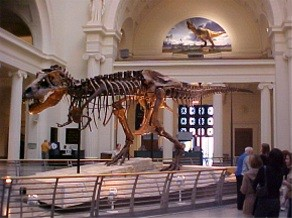
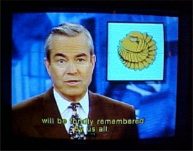
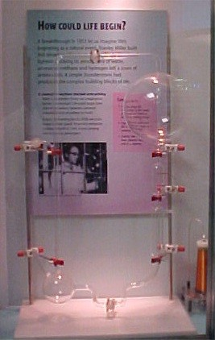
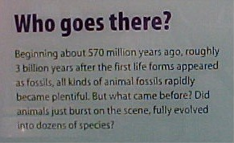
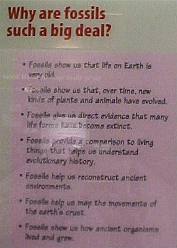
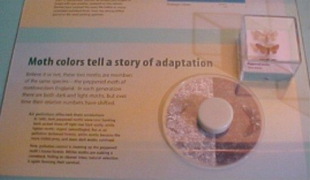
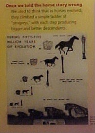
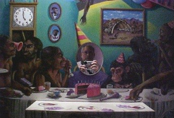

| Feature Article - December 2001 |
| by Do-While Jones |
A Field Trip to the Field Museum |
|---|
Because air fares have been so low lately, I decided to fly to Chicago to visit some friends for Veterans' Day weekend. While there, I decided to visit the Field Museum of Natural History to see what they had to say about evolution. I was pleasantly surprised. Although there is still a lot of misinformation in the older evolution exhibits, the newest dinosaur exhibit was very well done. I was encouraged that progress is being made, but they still have a long way to go. So, this is a mixed review.
The Traveling the Pacific exhibit is tucked away in the southwest corner of the second floor. You won't wander by it on your way to any other exhibit. You have to be going there on purpose, or you have to be intent on seeing the entire museum.
The exhibit consists of a very large room divided into many small chambers, each chamber devoted to a different Pacific island. There are chambers for Hawaii, the Marshall Islands, Tahiti, and others. The exhibits themselves are very well done. I once spent a couple of weeks in the Marshall Islands, and when I stepped into the Marshall Islands chamber, I really felt like I was back there. It was so well done, it was almost spooky. I've never been to Tahiti, but the French atmosphere of the Tahitian café was so realistic that I was glad to see that Orangina was on the menu, and was disappointed to realize it was just an exhibit and I could not actually buy any.
But some of the chambers had multiple doors, and I soon became lost in the exhibit. I went through several of the islands multiple times, and I am not sure I visited every island. So, I have to give the Traveling the Pacific exhibit very poor marks for its traffic pattern.
The other problem with the Traveling the Pacific exhibit is that it doesn't tell a story. The only thing I learned from going through the Traveling the Pacific exhibit was that soft drink prices in Tahiti are comparable to soft drink prices in Paris, which I inferred from the café menu.
Museum exhibits really should tell a story, and the natural traffic pattern should lead the visitors to see and hear the story in some logical way. Certainly it is tough to do that with rocks and minerals. That's why many museums simply display boring cases of well-lighted, beautiful crystals. Some of the display cases at our local gem and mineral show do a better job of conveying interesting information about rocks and minerals than most natural history museums do.
The point of going to any museum, even an art museum, is to learn something. Granted, many people go to art museums just to look at the paintings and sculptures. If all they see are pretty paintings, then they have missed an opportunity to learn something. Paintings and sculptures tell stories about the people who created them, and the cultures they lived in. They tell how the artists viewed the world, and what they thought was important about the world. Art museums, railroad museums, mining museums, and natural history museums should all tell stories. A railroad museum that is nothing more than a collection of locomotives, and fails to explain how the railroad affected the people and economy of the area, is a poor museum, no matter how well the locomotives are preserved.
|
When it comes to evolution, the Field Museum certainly has a story they want to tell. They know how to direct traffic to make sure most visitors will hear it told. They use an outside banner to start telling the story to you before you even walk through the door.
On Veterans' Day holiday, November 12, 2001, there were several special temporary exhibits that the Field Museum wanted visitors to see. One of the reasons they wanted visitors to see them is that they charged extra to see them. That's why there were big banners over the main (south) entrance advertising "Cleopatra of Egypt" and "Sigmund Freud: Conflict and Culture". The center banner depicts Sue, "one of the fiercest meat-eaters ever to walk the earth. Sue is the world's largest, most complete and most famous T. rex. For 67 million years her bones lay buried in rock. Now Sue stands again-right here at the Field Museum." 1 |
|
 |
So, before you even walk through the door, you have been told that Sue is the central, most important exhibit in the museum. Sue is the exhibit you absolutely don't want to miss.
It isn't hard to find Sue. As soon as you walk past the guards (who give you permission to take pictures of anything except the Cleopatra exhibit), you can see Sue at the north end of Stanley Field Hall. As you stand in line waiting to buy tickets, you can see Sue. You can also see the painting of Sue on the second floor just above the skeleton. So, visitors naturally proceed from the ticket booth to the north end of the hall to get a closer look at Sue. |
When they get to Sue, they discover that most of the information about Sue is on the second floor at the top of the stairway right in front of them. So, visitors naturally go up stairs to see the rest of the exhibit. When they get to the top of the stairs they find that the Sue exhibit starts there and proceeds toward the east. The west side of the second floor at the top of the stairs is starkly barren. There is nothing to attract them that way. They really have to go east. As they do, they see more Sue exhibits, ending at the McDonald's Fossil Prep Lab and the entrance to Life Over Time.
The McDonald's Fossil Prep Lab is enclosed in glass. Children who are fascinated with dinosaurs and want to become paleontologists can look through the glass and watch real paleontologists tediously cleaning bones. This will no doubt inspire these budding paleontologists to become firefighters instead.
Not only that, the evolution exhibit is U-shaped. The rest of the dinosaur bones (which is what kids come to the museum to see) are in the Elizabeth Morse Genius Dinosaur Hall, which forms the base of the U. The kids have to go through at least one half of the evolution display to get to see the dinosaurs. The entrance to one of the openings of the U is well marked, and right at the end of the Sue exhibit, so that is the one that the kids will naturally enter. The other end of the U is hidden behind the Sue Store gift shop. So, they will naturally go through the evolution exhibit in the intended direction and come out of the evolution exhibit at the entrance to a gift shop.
Since we are generally critical of evolutionists, any praise we give to this traffic management might be mistaken for sarcasm. Please understand that our praise here is genuine. They really did an excellent job of herding people along a path that allows the museum to tell the story they want to tell. We have some quarrels with the story they tell, but no quarrels at all with the way they get people to hear it. Nor do we have any objection to the museum advertising the fact that the only reason we are able to see Sue is that McDonald's paid the big bucks to purchase the bones and have them prepared for display.
Furthermore, the Sue exhibit was very well done. Other than the reference to "67 million years", there was hardly any evolutionary content in the exhibit at all, which proves one can mount an excellent, informative display without polluting it with unscientific evolutionary speculation. We especially liked the honesty in the display of bones similar to rib bones that weren't mounted with Sue because the paleontologists frankly didn't know where to put them.
Then they gave some examples of theories. For example
|
Theory: Birds are living dinosaurs
Why do we think so? Bird skeletons share many features with those of meat-eating dinosaurs, like Sue. Sue's skeleton provided a key piece of the puzzle that links dinosaurs and birds--a wishbone. Although evidence like this continues to mount, not everyone agrees that birds are dinosaurs. A few scientists believe that the two groups had a common reptile ancestor, but evolved independently. 2 |
Finally, they talked about speculation. For example, they said that any guesses as to what color Sue was would be pure speculation.
The presentation on Facts, Theories, and Speculation was immediately in front of the entrance to the Life Over Time (evolution) display. We had hoped that the Life Over Time display would also clearly distinguish facts from theory and speculation. We were sadly disappointed. Everything (even things that evolutionists now no longer believe) was presented as unquestionably true.
|
One of the unifying themes in the display was a series of TV monitors with newscasters (who might actually have been news anchors from one of the local Chicago TV stations) telling the evolutionary tale. A similar TV monitor was used in the Traveling the Pacific display to show actual news footage of lava destroying a visitor's center on Hawaii. Children could easily believe that "weather reports" about the prehistoric atmosphere and "news reports" of fish evolving into land animals, and so on, were as well documented as the Hawaiian lava flow. The TV monitors were used to make speculation appear to be fact. We feel this is very misleading. |
 |
|
 |
The voyage through time begins with life arising spontaneously in the ocean under an oxygen-free atmosphere. Mechanical saw tooth waves move back and forth as critters pop up behind them reminiscent of a carnival "dark ride". This portion of the display ends with a replica of Stanley Miller's apparatus used in his famous origin of life experiments.
We know that, from a Chicago point of view, Stanley Miller is a local boy made good. We have in past newsletters expressed our opinion that Stanley Miller's body of work (including his famous early experiment) will someday be widely recognized as some of the best evidence against the spontaneous generation of life. We have no objection to his experimental apparatus being shown in the museum. We just object to the text that went with it saying that life could have begun this way. His experiment actually proved that life could not have begun this way. If we were leading a tour through the Field Museum, we would spend a long time in front of the replica of Miller's experiment. We would have told the children that Stanley Miller did the experiment because he believed he could demonstrate how an organic broth that produces life could naturally occur. Then we would tell the children that neither he, nor anyone else, has ever been able to do it. We would also tell them all the obstacles to the spontaneous formation of life he discovered through his experiments. |
But the museum, having told the children the first lie (that scientists know how the first cell formed), continues the deception by saying that "scientists think" that simple cells evolved into complex cells. But they drop all pretense of uncertainty when they say, "They evolved about 1.8 billion years ago, ...".
Certainly eukaryotes and prokaryotes exist. The museum can explain how they differ, and what kind of organisms contain them. There are plenty of things the museum can say about them without passing off speculation as to how they formed as experimentally verified fact.
| Next, the museum talks about the "Cambrian explosion." Hopefully, children will really ponder the question they pose, "Did animals just burst onto the scene, fully evolved into dozens of species?" That's what the fossil evidence indicates. All sorts of different fossils are found in Cambrian rocks. All those creatures were alive at the same time, and died at the same time when the rocks formed (under water). There isn't any evidence of "complex cells" evolving into animals. As the museum sign says, they seem to appear "fully evolved," without any fossil evidence that a single one of those creatures had a "less evolved" ancestor. |
 |
The question they pose naturally might make one wonder, were the animals "fully evolved" or "fully formed" when they first appeared? If they were fully formed by a designer, then there would be no partially formed ancestors in the rocks. But if they were fully evolved, there should be some partially evolved ancestors somewhere. Why hasn't anyone ever found one? It certainly isn't because nobody has ever looked for them. Which is more scientific? to believe that there were partially evolved ancestors, even though none can be found? or to believe that animals appeared fully formed?
|
 |
|
| Although the peppered moth story has long been admitted in evolutionary circles to be based on flawed (and fabricated) data, there it is in all its glory. The museum has light and dark moths mounted on a transparent dial so that children can see how they appear against light- and dark-colored backgrounds. |
 |
We want you to remember this because we will talk about the peppered moth fiasco in a future newsletter, and we will be criticized by evolutionists for beating a dead horse. They will cry, "Foul!" because the peppered moth example has been rejected by evolutionists for years. They will say we are attacking an argument that evolutionists no longer use. But we will calmly respond that as long as museums like the Field Museum of Natural History continue to present erroneous "facts", we will continue to expose those errors.
|
 |
The museum does admit to a number of evolutionary mistakes. They ease into it by admitting that Darwin wasn't entirely right. Then they address their most famous blunder, and honestly admit, "Once we told the horse story wrong." They even show a small picture of their old exhibit.
But what do they have in its place? They show a tree with unlabeled leaves, showing no fossils have ever been found that are known to be the ancestor of any other horses. They also have a carnival-style horse-race game with different horses popping up and down during the race. It is a very amusing display. I watched children watching the race, betting on different horses. I learned more about children than I did about horse evolution from that display. I learned that children change their bets to horse 14 after the race is over, when horse 14 (the modern horse) has won. I also learned that the children fortunately make absolutely no connection between the horse race and horse evolution. They just pick their favorite numbers at the beginning of the race, and change to 14 when the race is over. |
There was even an admission that evolutionists don't agree on human origins, although they down-played it as being inconsequential. But it was good to see such a short list of things "most researchers" (not even "all researchers") agree upon. Next to the short list of things "most researchers" agree upon, there was a much longer list of things that they don't agree on.
|
So, instead of the expected human family tree, there is a hole in a wall where a child can place his or her head and look at a mirror. The mirror shows the child at a birthday party with all his or her ape ancestors. Then the child is told that "It was a great party, but only a few survived." Ironically, after showing absolutely no evidence for human evolution, and noting much of the disagreement among evolutionary scientists (totally ignoring creation scientists, of course), they come to this startling conclusion: "How did modern humans come to be? Evidence for the scientific answer is overwhelming--we evolved from earlier not-quite-human relatives." |
 |
Speaking of the "TV news" program, they sell a lot of things in the gift shops at the Field Museum, including video tapes. Do you think we could buy a copy of the Life Over Time video? I even badgered the sales clerk into calling her supervisor to make sure they didn't sell it. Why don't they sell it? We suspect it is because they know how misleading and embarrassing it is.
Imagine what we could do with that video at a creation/evolution debate. We could play a few sentences and pause the tape. Then we could ask our opponent if there is any scientific basis for what the news anchor has just stated so factually. After being forced to admit there is no basis, we would play the next few sentences and pause the tape. By the time we finished the whole tape, the audience would realize that there wasn't any factual basis for anything the "news anchor" said on that tape. The entire video is nothing but speculation.
The Field Museum, of course, has a web site. On that web site there many pages that correspond to their exhibits. Try to find their Life Over Time pages. There really are some, but they are hard to find. If you can't find them, they start right here. It isn't a very impressive presentation, is it? It is just a series of four pretty paintings, that are nothing more than an artist's conception of what prehistoric life must have looked like. It is no wonder you have to search for it.
We encourage you to go through the Life Over Time exhibit. Listen to the story they tell. But at every point along the way ask, "How do they know that?" You will find that the answer is always, "They don't KNOW that. They BELIEVE that. They accept it without question and without evidence." Ask yourself, "If there really is so much evidence for evolution, why didn't the Field Museum show any of it?"
| Quick links to | |
|---|---|
| Science Against Evolution Home Page |
Back issues of Disclosure (our newsletter) |
| Web Site of the Month |
Topical Index |
Footnotes:
The links to the museum floor plan in 2001 are no longer functional. But the electronic map of the 2021 displays at https://map.fieldmuseum.org/?_ga=2.202598289.1643637105.1637865948-210401378.1637865948# is similar. Click on the "Upper Level" block in the lower right corner to see second floor layout.
1
The Field Museum September 2001 - March 2002 Map.
(Ev)
2
http://www.fmnh.org/sue/theory2.html
(Ev)